文章来源 CSS排版为何强？瞧瞧多牛这换行
CSS这门语言中有各种各样的CSS属性和值来专门处理与文字排版换行相关的需求。
一、默认换行行为
在 Web 文字排版中，默认的换行行为如下。
1. 中文（CJK文字）
所有中文的文字内容都是换行点，例如，当宽度很小的时候，文字一柱擎天显示了：
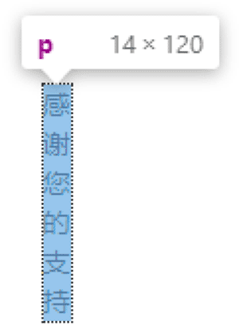
但是如果有标点符号，则情况发生了变化。
因为标点自带一些特别的换行特性。
例如逗号，句号，问号，逗号，感叹号就属于避头标点，是不能在开头显示的，称为避头标点。
例如上引号，上括号不能出现一行的尾部，称为避尾标点。
由于这种不能出现在开头或结尾的特性，使得这些标点在匹配这种情况的时候是不能换行的。
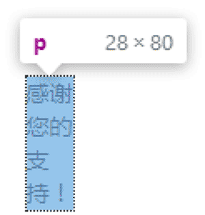
例如，下面的容器宽度很小的时候，也保持了两个汉字的宽度，原因在于最后的感叹号是避头标点，如果换行了，就会出现在一行的开头，这是不被允许的，因此，在“持”这个字后面显示了。
在所有的中文标点中，有个标点符号值得专门一提，这个标点就是中文的破折号。
当中文破折号连续书写的时候，虽然避首避尾规则各个浏览器下有所不同（见下图），但破折号内部不会换行是所有浏览器都保持一致的的。
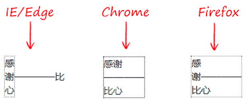
2. 英文和数字（非CJK文字）
英文的单词由连续英文字母构成，因此默认是不会换行的，连续的数字也是如此，只有遇到空格（U+0020）或者短横线连接符（U+002d）才会换行。
因此，如果一段文字内容中都是英文体系的字符，没有空格和短横线，则就可能出现连续字符超过容器宽度的情况，如下图所示：
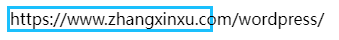
下面看看上述这些默认的换行行为如何使用 CSS 进行改变。
二、中文内容不可换行
如果希望中文内容不能成为换行点，可以使用如下所示的 CSS 声明：
word-break:keep-all;
此设置不会影响英文内容，也就是英文句子该换行还是换行，只中文内容变得不会自动换行。
在精确排版场景中，有时候希望中文一行显示，比方说下面的例子。
在宽度自适应的表格下，如果表格宽度不是很富足，标题中文可能就会换行，实际上一行显示效果更好，此时就可以使用上面的 word-break:keep-all，效果如下图所示：
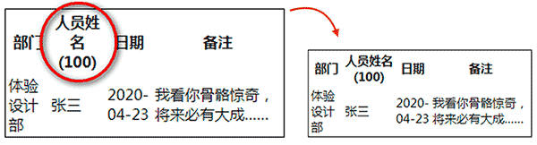
三、中文标点可换行
如果希望中文标点没有避头和避尾特性，可以使用下面的 CSS 声明：
line-break: anywhere;
此时的效果如下图所示：
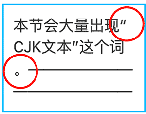
可以看到上引号出现在了一行的尾部，句号也跑到了一行的开头。
四、连续破折号可换行
在默认情况下，如果书写过于冗长的破折号，可能会出现破折号超出容器宽度的布局问题，例如：
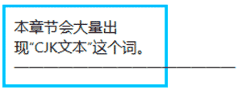
这肯定不是我们希望看到的，此时，可以通过设置如下所示的 CSS 声明让连续破折号也换行。
word-wrap: break-word;
此时，破折号就会在容器的边缘自动换行，效果如下所示：
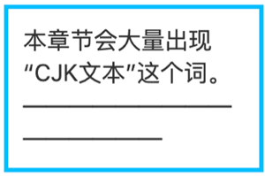
五、英文数字成为换行点
默认情况下，英文单词和连续的数字是无法换行的，此时我们可以使用如下所示的 CSS 声明使其强制换行。
word-break:break\-all;
例如，一开始出现的连续英文字符超出容器的渲染效果：
就会变成下图这样：
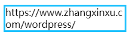
六、空格不是换行点
默认情况下，英文句子都是在空格位置处换行，如果希望这些空格不再是换行点，可以使用下面的 CSS 声明：
white-space: nowrap;
例如，这是一段默认排版的文字：
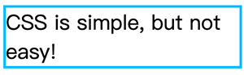
应用了 white-space:nowrap 后就会一行显示：
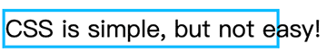
由于在 Web 中，换行符都会按照空格进行解析，因此，当一段文字设置为 white-space:nowrap，中文也会在一行显示，因为让中文换行的这个换行符解析成了 white-space。
如果还是不理解，可以参考我之前这篇文章：“为什么white-space:nowrap可以让文字一行显示？”
七、英文标点强制换行
某些英文表单具有不可换行特性，例如 i’m 这个单词，其中的单引号具有特殊含义，默认是不能换行的。
此时，我们可以设置如下所示的 CSS 声明，让这个单引号单独一行显示。
overflow-wrap: anywhere;
我们可以对比下 word-break:break-all 这个声明，就可以知道 overflow-wrap:anywhere 的作用了。
如下一段 HTML 和 CSS 代码：
<p class\="p1"\>i'm a developer</p\>
<p class\="p2"\>i'm a developer</p\>
p {
width: min-content;
border: 2px solid deepskyblue;
}
.p1 {
overflow-wrap: anywhere;
}
.p2 {
word-break: break-all;
}
此时的效果对比效果如下图所示：
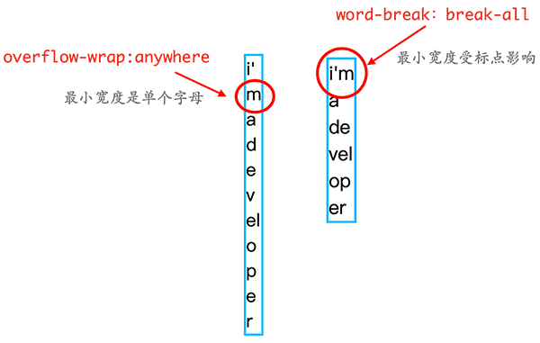
八、结语
从上面的案例可以看出，凡是 Web 中的换行规则都可以改变，无论是中文的还是英文的，灵活到超出你的想象，非常强大。
所以在文字内容排版这块，CSS 是计算机领域中无可争议的霸主气，什么 SVG 什么 canvas 根本就是望尘莫及。
当然，关于 CSS 文字排版，还有很多其他属性，以及还有很多上面出现过的属性的其他值。